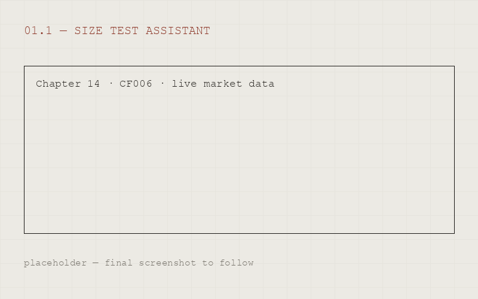

01.1
Size Test Assistant
Identified the highest-frequency pain in Chapter 14 work, then shipped the fix: automated size test calculations and CF006 completion with live market data. An hour of associate time down to a minute.

Hong Kong · 2026
01 Legal Tech
Useful legal tech starts with domain expertise. I spent five years inside the HK Listing Rules; now I build the products I wished I had, from problem discovery to shipped tool.
01.1
Identified the highest-frequency pain in Chapter 14 work, then shipped the fix: automated size test calculations and CF006 completion with live market data. An hour of associate time down to a minute.

01.2
RAG over the full rulebook, with citations. Scoped for trust: answers like a senior associate, sourced like a footnote.
01.3
Volunteer builder on AI projects spanning document automation, multi-jurisdictional review, and voice agents.
02 Auteur
A cultural learning iOS app, built end to end: product strategy, design system, React Native front end, Supabase backend. Designed like a magazine because the retention insight is editorial, not gamified: learning about art should feel like reading a good periodical, not clearing a streak.
03 Design & Dev
03.1
Product Manager for a B2B2C ISO certification platform. Owned the roadmap and shipped the surfaces: partner portal, candidate portal, exam interface, bilingual site.

03.2
Bilingual website for a Melbourne salon, with a 貳鄉 poem as the hero. Proof that commercial sites can have a soul.

04 Legal
Qualified as a Hong Kong solicitor in 2022. Five years at Sidley Austin across capital markets, M&A, and regulatory work.